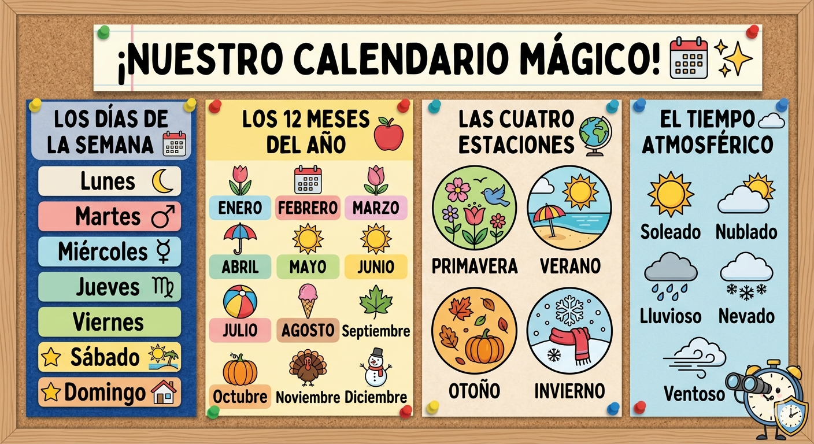
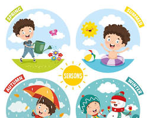

Texto
EL CALENDARIO Y LAS ESTACIONES.

EL BAILE DE LAS ESTACIONES

¡Guardianes, prepárense para el gran viaje! 🌍 El tiempo no solo se mide en horas y días, ¡también se mide en estaciones! Nuestra Tierra baila alrededor del Sol y, dependiendo de dónde esté, ¡cambia el tiempo, el paisaje y nuestra ropa!
🤔 ¿En qué estación estamos? Adivina, adivinanza...
🌸 PRIMAVERA: Los campos se llenan de flores, los pajaritos cantan y empieza a hacer calorcito. ¡Todo renace!
☀️ VERANO: Hace mucho calor, vamos a la playa y los días son muy largos. ¡La diversión está asegurada!
🍂 OTOÑO: Las hojas de los árboles se vuelven marrones y caen. El viento sopla y las ardillas recogen nueces.
❄️ INVIERNO: Hace mucho frío, puede nevar y nos abrigamos mucho. ¡Los días son cortos y nos gusta estar en casa!
🗓️ ¡EL CALENDARIO DE LOS GUARDIANES!
Para medir el tiempo a lo largo del año, usamos el calendario. ¡Es nuestro mapa temporal!
Los 7 días de la semana 📅: Lunes, Martes, Miércoles, Jueves, Viernes, Sábado y Domingo.
Los 12 meses del año 🍎: Enero, Febrero, Marzo (¡en el que estamos!), Abril, Mayo, Junio, Julio, Agosto, Septiembre, Octubre, Noviembre y Diciembre.
Recuerda: Cada estación que has visto arriba dura 3 meses. ¡El tiempo no para!
🕵️♂️ TU PRIMERA MISIÓN ESTACIONAL:
En este apartado, vamos a convertirnos en "Detectives Estacionales". Para ello, vamos a usar dos de las herramientas que ya conocemos:
📊 PANEL DE LAS ESTACIONES (EN PAREJAS):
En tu cuaderno, dibuja un gran círculo dividido en 4 partes (como una pizza 🍕).
En cada parte, dibuja lo más característico de una estación (un sol, un muñeco de nieve, flores, hojas secas...).
Busca en el Padlet fotos de paisajes en diferentes estaciones y pégalas en tu panel.
"🎮 TU MISIÓN: Pincha aquí para ir al PADLET DEL TIEMPO y busca el juego de Liveworksheets."
https://padlet.com/imonper152/tic-tac-aprendemos-el-tiempo-ndxd3ce2ougx8mst